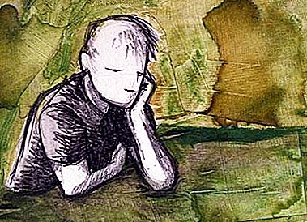

起源和概念
理性主义、欧洲理性主义(Rationalism)是建立在承认人的理性可以作为知识来源的理论基础上的一种哲学方法，高于并独立于感官感知。一般认为随着笛卡儿的理论而产生，17-18世纪间主要在欧洲大陆上得以传播。 理性指能够识别、判断、评估实际理由以及使人的行为符合特定目的等方面的智能。理性通过论点与具有说服力的论据发现真理，通过符合逻辑的推理而非依靠表象而获得结论，意见和行动的理由。理性主义及经验主义并非由当时的哲学家，而是后人作出了区分。 Read more...
理性主义、欧洲理性主义(Rationalism)是建立在承认人的理性可以作为知识来源的理论基础上的一种哲学方法，高于并独立于感官感知。一般认为随着笛卡儿的理论而产生，17-18世纪间主要在欧洲大陆上得以传播。 理性指能够识别、判断、评估实际理由以及使人的行为符合特定目的等方面的智能。理性通过论点与具有说服力的论据发现真理，通过符合逻辑的推理而非依靠表象而获得结论，意见和行动的理由。理性主义及经验主义并非由当时的哲学家，而是后人作出了区分。 Read more...
理性主义的知识论已渗透到17、18世纪欧洲文化的各个领域，如欧克肖特所说，在那时，即使是诗歌和戏剧，人们也明显专注于技术，专注于写作规则，没有活动得以幸免，没有社会不受触动。
但是这样一种相对稳定的知识划分在启蒙运动中被动摇了。理性主义的代表人物培根在《新工具》中说，当时欧洲的知识既不繁荣，也没有很大进步，要恢复健全和健康的状况，必须重新开始知性的全部工作，不放任心灵本身的自流，而要步步加以引导，为此需要一种可靠的计划、一种新的理解方式、一种探索的艺术、一种工具。在他看来，真正的知识必须从净化心灵开始，它始于确定性也终于确定性，本身是完全的，知识要与观念分开，不存在从最初吸收的幼稚想法中获取真知的问题。
理性主义在近代欧洲的发展史上产生过积极作用，它有助于人类生存状态的改善、个性价值的张扬和科学技术的繁荣。另一方面，理性主义的知识论也给人类文明的演进增加了新的不确定性。帕斯卡批评说，笛卡尔对确定知识的渴望建立在一个错误的确定性标准的基础上，因为人类心智的成功运作并不完全靠一个有意识制定的技术，即使在牵涉到技术的地方，心灵也是“默默地、自然而非人为地”奉行技术。所以，理性主义的意义不是它承认技术知识，而是它没有承认任何别的知识。它的哲学错误在于它给予技术的确定性和它技术霸权的教条；它的实践错误在于它相信使行为变为自觉意识只会有好处而没有坏处。 Read more...